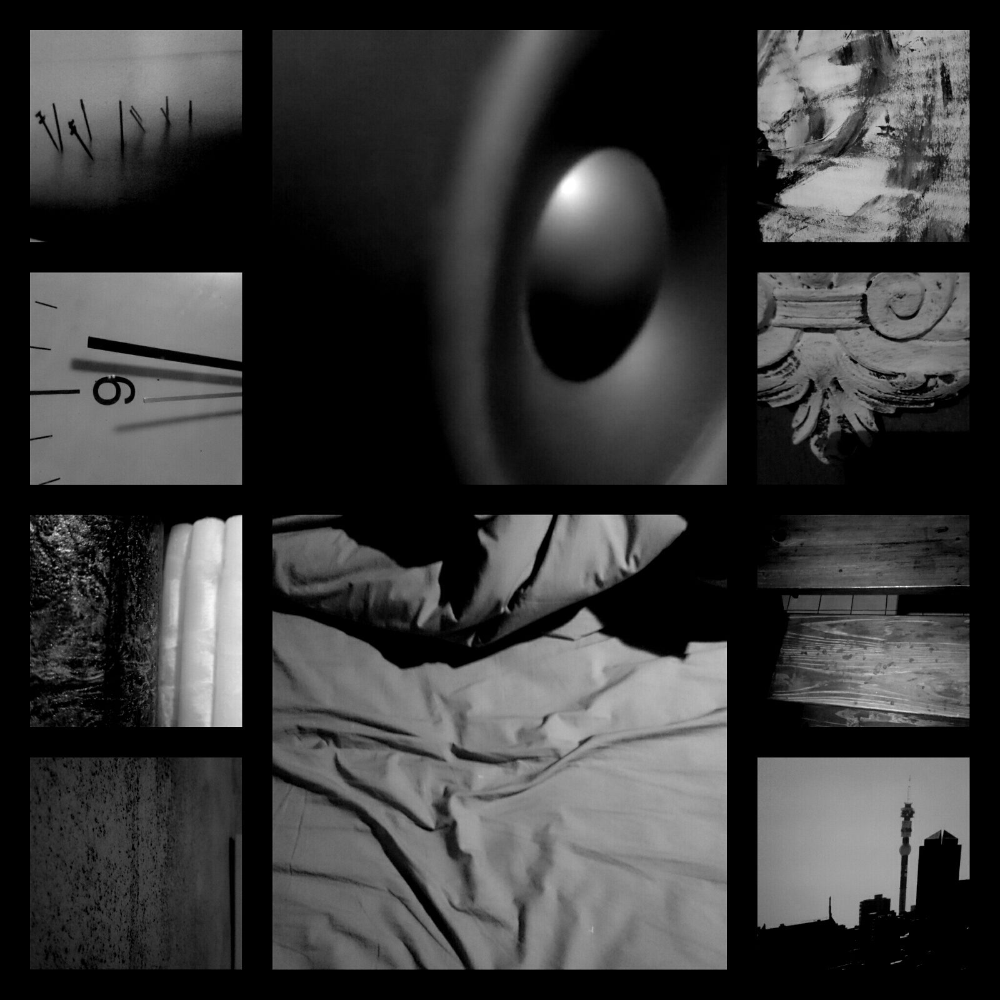

Add 2 eggs and set the oven to 180...
Unmade bed
clock, scribbles against the wall
Antique mirror, forgetfulness
Pride goes before the fall
Loveless
Barren like a storm
Repugnant
Not a man but a worm
Tick, fridge humming downstairs
Airconditioning is loud
Prayers are said
I never did like a crowd
Reflections, water, negative ions
Quantum entanglement, death
Occupied two spaces and one
Going blue from holding my breath
Sleep, counting sheep
Should be counting people instead
Running up and down
On the treadmill in my head
Have another bath
Smoke a cigarette
Asked but no response
Not remorse but regret
No sense, incoherent
Dissatisfied with it all
Wash, rinse, repeat
Unknown number, blocked call
Office, work, alarm five fifteen
Dogs on the furniture
Sickness, world peace
Sick heart, no cure
Sedative, no
Blocks questions but answers too
We don't speak to the dead
But they speak to you
An enigma, passing dust
Ashes, flames of burning lust
Love, redemption, prophecy
Just who do you trust?
{kind=link}
